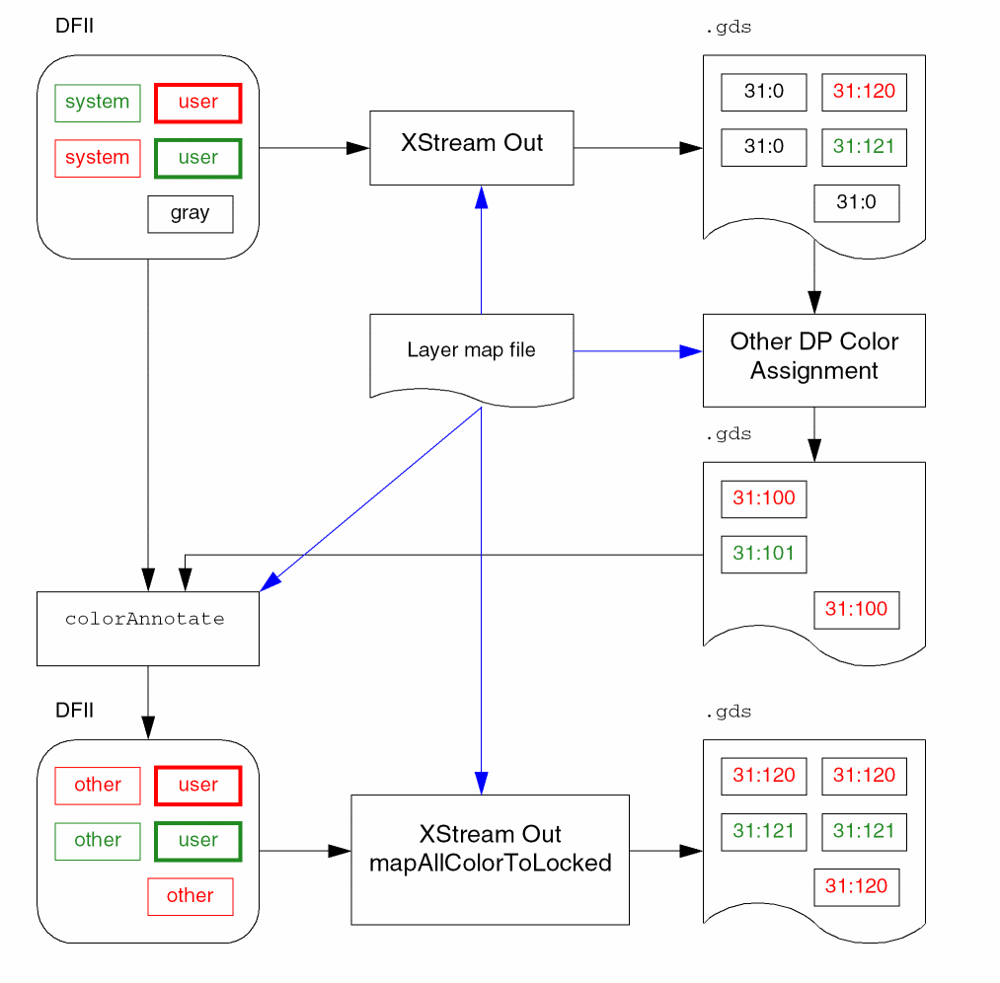

Sample Layer Map File for Fully Colored Backannotation Flow
The following is an example of a layer map file for the Fully Colored Backannotation flow:
# DFII DFII Stream Stream
# Layer Layer-Purpose Layer # Data Type MaskColor ColorState/ColorAnnotate
Metal1 drawing 31 0
Metal1 drawing 31 200 mask1Color locked
Metal1 drawing 31 201 mask2Color locked
Metal1 drawing 31 100 mask1Color colorAnnotate
Metal1 drawing 31 101 mask2Color colorAnnotate
Metal2 drawing 32 0
Metal2 drawing 32 200 mask1Color locked
Metal2 drawing 32 201 mask2Color locked
Metal2 drawing 32 100 mask1Color colorAnnotate
Metal2 drawing 32 101 mask2Color colorAnnotate
The following figure shows the progression of sample data using this layer map in the Fully Colored Backannotation flow.

Related Topics
Return to top